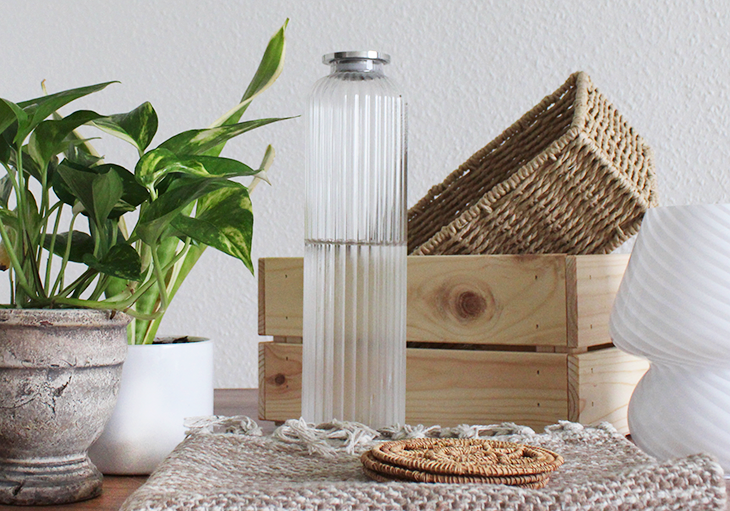
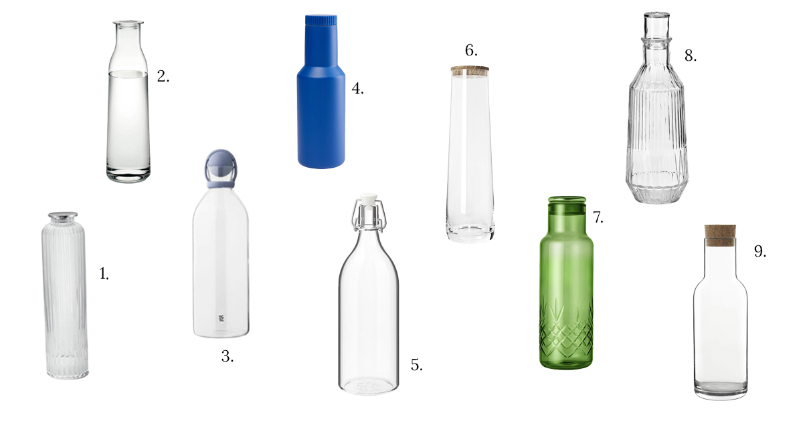
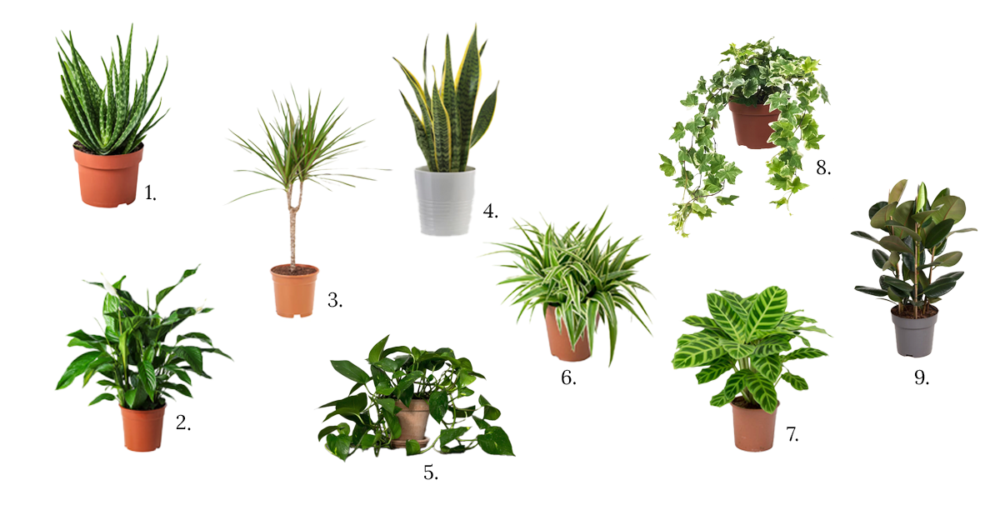
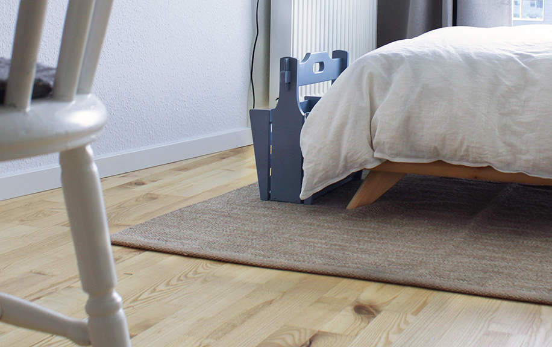

5 ting jeg ikke kan undvære i min studiebolig
Det er fedt med de mange muligheder for at starte på frisk, når man flytter ud og ind i sit eget, men hvordan sørger man så for, at ens nye “hjem” rent faktisk bliver som et hjem? Et sted, hvor man føler dig godt tilpas og kan få en hverdag til at fungere fra? Det var nok noget det sidste, jeg selv fandt tid til at tænke på midt i alle de praktiske aspekter af min flytteproces.
Så her er min hjælpende hånd til dig – en liste over fem ting, jeg ikke tror, du har lyst til at undvære i dit nye hjem. De vil med garanti gøre dit liv som både udeboende og studerende mere komfortabelt og funktionelt!
1. En karaffel så du altid har koldt vand
Det er ikke tilfældigt, at det første på listen er en vandkaraffel, som kan passe i køleskabslågen. For det er - uden at lyde dramatisk – en af de mest brugte genstande, jeg har i min egen lejlighed. Jeg synes i hvert fald, det er lidt af en luksus at have adgang til iskoldt vand hver dag. Den kan betragtes lidt som en Quokker, men for studerende.
Et lille tip: Gå efter en karaffel med prop, så vandet ikke tager smag fra køleskabets andre gode sager;) Og den kan naturligvis bruges til meget andet end bare vand – juice og drinks eksempelvis.
I tvivl om, hvor du skal finde den helt rigtige? Intet problem! Herunder har jeg samlet mine bedste forslag:

1. Bernadotte |
2. Minima |
3. Cool-It |
4. Tube Thermal |
5. KORKEN |
6. Signature Rocket |
7. Crispy Green Bottle |
8. SÄLLSKAPLIG |
9. Sublime
Så hvad end du er til dansk design eller går med IKEA all the way, bliver det ikke noget problem at finde en karaffel, som matcher din personlige stil og budget. Genbrug er også en oplagt mulighed til at finde en unik og som regel meget prisvenlig karaffel.
2. Godt læselys
En ting, som jeg selv undervurderede, da jeg flyttede fra mine forældre og ind i mit eget, er vigtigheden af god belysning. Jeg var så heldig, at lejligheden i forvejen havde lidt lys installeret, men måtte alligevel hurtigt erkende, at den ene loftslampe slet ikke kunne klare opgaven på egen hånd. Jeg manglede noget lys placeret der, hvor jeg normalt sidder og læser.
3 gode grunde til at gode lyskilder til din lejlighed er uundværlige:
- Du gør den hjemlig, hyggelig og behagelig at opholde sig i hele året rundt
- Du skaber en funktionel hjemmearbejdsplads
- Du belaster øjnene mindst muligt og forbedrer din læseoplevelse mest muligt, en ren win win!
Du kan med fordel gå efter gulvlamper, bordlamper eller transportable lamper for en fleksibel og lejervenlig løsning og kigge steder som IKEA, Søstrene Grene, JYSK, Magasin eller i en lokal lampeforretning, hvis dit budget tillader det.
Facebook Marketplace er også værd at give et forsøg. Her sælger folk ofte ud af lamper i god stand, til fornuftige priser, og hvis du er heldig, lige rundt om hjørnet.
3. Grønne planter for et sundere indeklima
Udover at tilføre liv og farve ikke mindst frisk ilt til dit hjem, kan grønne planter også rense luften for skadelige stoffer og endda øge luftfugtigheden, hvilket er ekstra godt i de kolde og tørre vintermåneder.
Stueplanterne nedenfor er særligt effektive til at opretholde et sundt indeklima. Og i Aarhus, finder du dem bl.a. hos Plantorama, BilligBlomst, plantecaféen Plukk i Aarhus C, blomster-handleren Gamst på ”strøget” eller havecentret i byens mange byggemarkeder.
1. Aloe Vera | 2. Fredslinje | 3. Dracaena | 4. Bajonetplante (en personlig favorit) | 5. Guld-ranke | 6. Væddeløber |
7. Fiskebensplante | 8. Efeu | 9. Gummifigen
Pssst… Aloe Vera-planter, fredslinjer, bajonetplanter og gummifigner er dem på listen, som kræver mindst pasning;)
4. Multifunktionelle møbler
Jeg opfinder vist ikke den dybe tallerken, når jeg siger, at møbler, som har mere end bare én funktion, er geniale, hvis du bor på begrænset plads. IKEA må være nogle af de bedste til at mestre den disciplin, men der er også andre muligheder.
Jeg faldt selv over en gammel magasinholder i genbrug, som efter en kærlig hånd med sandpapir og en omgang blå maling, virkelig fik sin ret tilbage og nu tjener flere forskellige formål i min lille lejlighed.
Lige nu bruger jeg den til at opbevare mine studiebøger, men den er også som skabt til kogebøger, fodtøj, striktøj eller endda rengøringsmidler.
Et andet af mine forslag er at bruge en skammel som sengebord. På den måde har du en ekstra siddeplads, du nemt kan hive frem, hvis behovet for den opstår - uden at plads går til spild, når den ikke er i brug.
5. Gulvtæpper for hygge og rumdeling
Tag hyggen og komforten til et nyt niveau i dit hjem med gulvtæpper af enhver type, form, farve og størrelse.
Personligt er jeg specielt glad for mit store bomuldsgulvtæppe, som har fået en plads under min seng. Det giver mig nemlig mulighed for (med lidt god vilje i hvert fald) at adskille mit soveområde fra mit spiseområde, selvom de to er del af samme rum. Og så er det bare rart at træde ud på om morgenen.
Top 3 grunde til at gulvtæpper er nice:
- De skaber varme for både rummet og for fødderne
- De absorberer lyd og giver en behagelig akustik
- De beskytter dine gulve mod pletter, ridser og slid
Det er ikke sikkert, at alle tingene er prioriteret øverst på din egen liste over det, du skal bruge til din lejlighed, men så er jeg sikker på, at de også ville passe godt på en ønskeseddel.